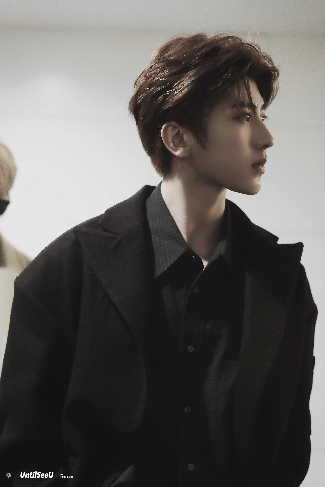

蔡徐坤的个人主页
基本资料
| 信息类别 |
内容 |
| 姓名 |
蔡徐坤 |
| 出生日期 |
1998.08.02 |
| 身高体重 |
183cm，55kg |
演艺大事件
星动亚洲
2015年7月10日，蔡徐坤参加录制由安徽卫视主办的青春励志榜样养成类真人秀节目《星动亚洲》，并且成功进入了全国前15强。8月，蔡徐坤与《星动亚洲》前15强的其余学员前往韩国进行三个月的封闭训练。9月，回到中国，录制安徽卫视的中秋晚会。
SWIN组合
2016年10月18日，蔡徐坤加入男子组合SWIN，并担任音乐小分队SWIN-S中的高音RAP。12月，蔡徐坤所在组合SWIN-S发行首张迷你专辑《New World》，收录了包括《Fantasy》和《明日路》等在内的5首歌曲。
参演影视剧
2017年3月，蔡徐坤参与电视剧《我才不会被女孩子欺负呢》拍摄，在剧中饰演热血、仗义、重情义的男主角叶麟，该剧于2018年4月12日优酷独播。
偶像练习生
2018年1月，参加爱奇艺重点打造的中国首档偶像男团竞演养成类真人秀《偶像练习生》；4月6日，《偶像练习生》总决赛，获得最高票数，以NINE PERCENT九人男团C位出道。
发布作品
2018年8月2日，蔡徐坤发行个人首张EP《1》，该张专辑融合了Future R&B/Urban R&B等多种不同风格的元素，共包含《Pull up》《You can be my girlfriend》《It’s you》三首单曲
2019年1月，与杨幂成为北京电视台春晚代言人，并且特地为该次春晚创作歌曲《那年春天》。
2月18日，单曲《没有意外》上线。蔡徐坤作词，林宥嘉作曲。
主要成就
- 2018时尚先生盛典“年度先生”称号
- 2018智族GQ年度人物盛典年度最佳新人奖
- 2018今日头条年度盛典今日头条年度偶像人物
- 中牙友好大使暨中牙杰出青年领袖人物
- NBA首位新春贺岁形象大使
绝美图册
蔡徐坤个人图集
>>>查看更多
